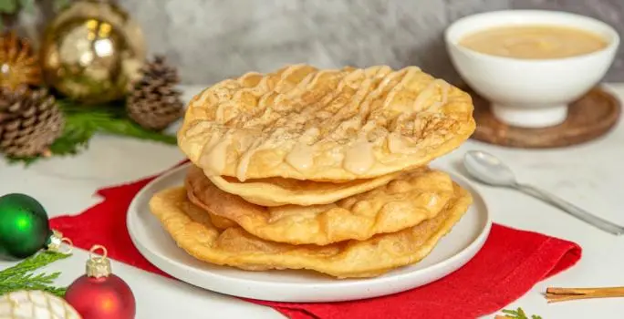

historia De Los Postres
El postre es el plato de sabor dulce o salado que se toma al final de la comida, o de la merienda. Cuando se habla de postres se entiende alguna preparación dulce, bien sean cremas, galletas, pasteles, helados, bombones, etc. Por extensión se denomina postre a cualquier comida dulce, incluso si no se toma al final de la comida. Algunos ejemplos son las galletas, chocolates y magdalenas. Algunos postres se preparan salados, en especial para personas que no gustan del sabor dulce o les hace daño.
Los postres han sido siempre el broche de oro de una comida. Un buen postre resaltará la satisfacción de los alimentos anteriores. En muchos casos se planean como una agradable sorpresa, pero realmente constituyen también un complemento importante al aporte de nutrientes en la alimentación diaria. Contienen elementos nutritivos como frutas, leches, huevos y elementos energéticos como azúcares y grasas. Hay postres que se preparan al momento o con anticipación, ya que existen postres en todas las temperaturas y texturas (al tiempo, calientes, fríos, helados y mixtos).
Es importante considerar que los postres ofrecen una gran aportación calórica y energética, por lo que se han diseñado en la actualidad gran variedad de postres que cambian algunos ingredientes por otros con menos riesgos para la salud. Ejemplo de ello son los que incluyen menos grasas, o bien frutas naturales, y excluyen ingredientes sin refinar o edulcorantes para evitar enfermedades como la diabetes mellitus o la obesidad.
Lista De Postres
- Tartaletas de Vainilla con Frambuesa
- Buñuelos en salsa de guayaba 
- Flan Napolitano
- Pay de Fresas
- Conchas de Chocolate
- Brownie